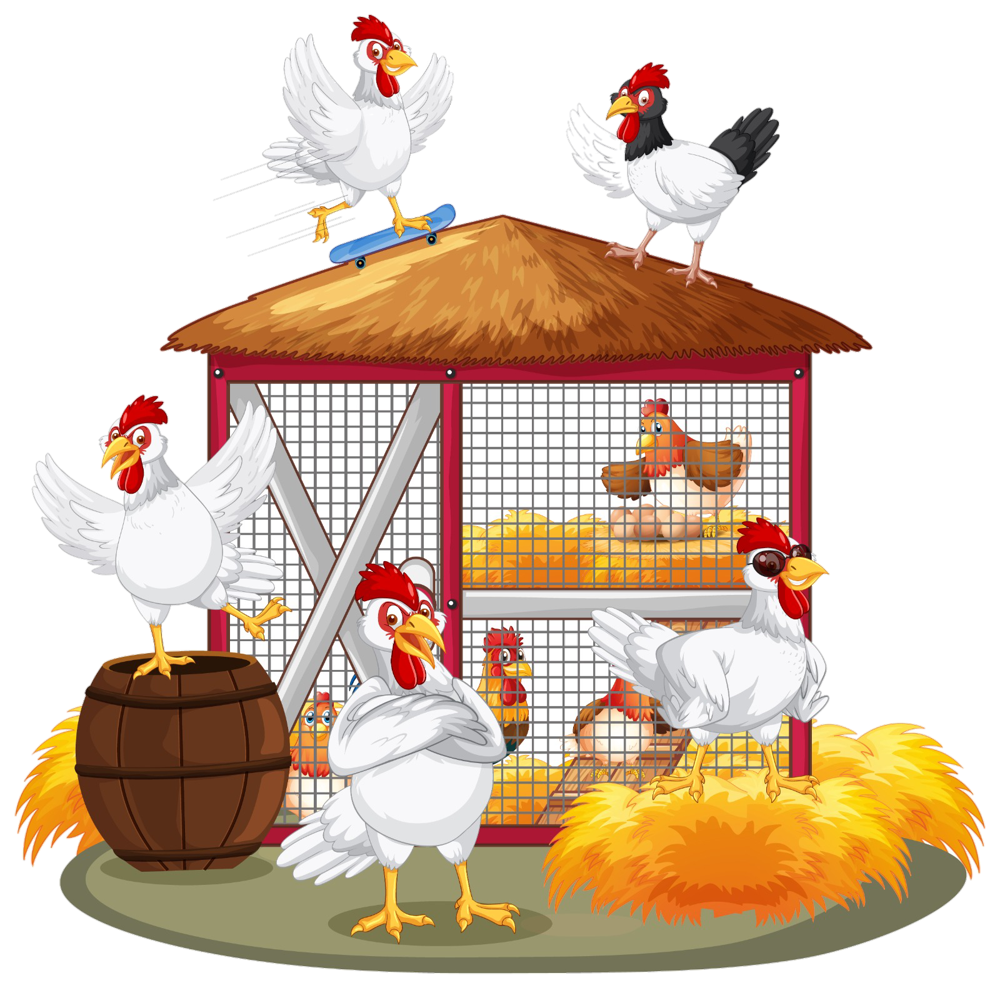

IoT Kandang

⚠️ Data Tidak Terkirim
Saran Perbaikan:
- Periksa kabel power dan pastikan mikrokontroler menyala
- Cek koneksi internet / sinyal modem
- Restart ulang perangkat mikrokontroler
Jika masalah berlanjut, silakan hubungi tim teknis kami